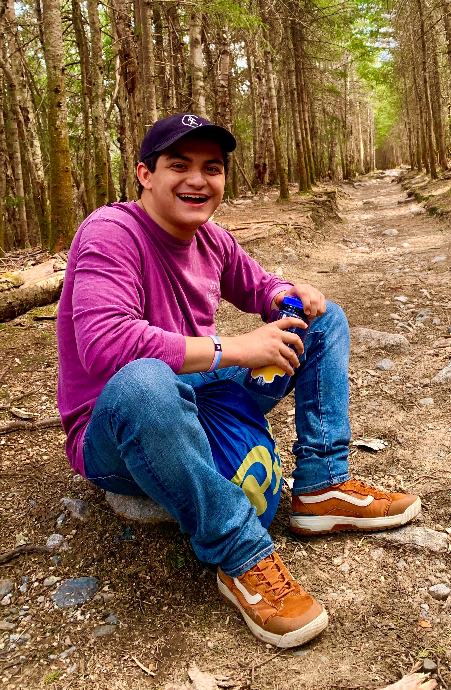

About Me
I am currently a sophomore at the University of Pittsburgh majoring in Computer Science with minors in Linguistics and Mathematics. At this time, I am working under Dr. Malihe Alikhani with her research group assisting on several projects, and working as a UTA for Dr. Arjun Chandrasekhar's 'Big Ideas in Computing and Information' course.
Research Interests
My primary research interests are in the fields of Natural Language Processing and Mathematical Optimization with a specific interest in the development of Conversational AI and Intelligent Dialogue Systems. I aspire to work towards building human-level artificial intelligent entitites that can engage in dialogue with humans for a variety of purposes.